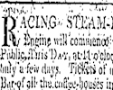
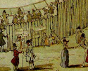
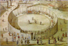
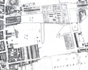
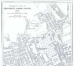
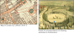

Research on the Location of Steam Circus
In 1808, a steam engine moving around in a circular track, and pulling an open carriage would have probably caused a sense of amazement and nervousness amongst the visitors. Thus, it was surprising that a search in libraries, archives, museums, private collections, and on the Internet yielded few records of the location of Steam Circus. There could be several reasons for the lack of evidence on the precise location, for instance,
- Trevithick was quite disappointed with the mixed success of demonstration; therefore, perhaps he did not care to keep detailed records.
- Eyewitness accounts suggest that the site design and construction was fairly basic and of little conventional archaeological value.
- Other researchers have found out that many of the personal papers of Richard Trevithick, which might have contained more details about the Steam Circus' location, were discarded.
- The event could have been considered as insignificant or of poor taste (perhaps due to its association with the race against a horse) or maverick (even unrealistic) to deserve a much wider national record.
The identification of the exact location of Steam Circus will thus preserve the memory of this unique part of early railways history and also of the rapidly changing urban heritage of London.
This research has collected existing hypotheses and proposed some new ideas to expand the existing ideas.
Evidences
There are primarily three main types of evidences that give us an insight about the location and nature of the demonstration viz. newspapers, eyewitness descriptions, and illustrations.
Newspapers
The demonstration was advertised and keenly discussed in three newspapers, namely The Times, The Observer, and The Morning Chronicle. These news items contain the most concise reference but not the exact location of the event. It could be so because the event took place in an open field; therefore, it would have been easily visible from nearby areas. The relevant excerpts from the newspapers arranged chronologically are available at: newspapers.html.
Eyewitness Descriptions
There are a handful of eyewitness accounts describing various aspects of the event. These were published much later on in biographies, personal letters, and communications to newspapers. By then, the place names had changed and memories of the event had faded. As a consequence, these descriptions indicate different names for the venue of the event. However, these descriptions provide a rich portrayal of the activities during the event. The relevant excerpts gathered from various books are available at: eyewitness.html.
Illustrations
At the Early Railways Conference in 2008, John Liffen from Science Museum presented five depictions of the Steam Circus. These include works published in books and as water colours. Three of depictions are attributed to Thomas Rowlandson (1756-1827). In c. 1872, W. J.Welch also drew an illustration of the event for the book "Life of Richard Trevithick, With An Account Of His Inventions", which has a strong resemblance to those attributed to Rowlandson. The application of these illustrations to locate the site of the event is open to speculation, requiring a systematic analysis. Dickinson and Tetley (1934) did not consider the illustrations to be of any value in locating the Steam Circus due to various inconsistencies. Liffen also proposed that the drawings attributed to Rowlandson were forgeries; perhaps inspired from the drawing by Welch. Liffen's thought are later published in The Railway Magazine article [PDF]. If some of these illustrations are indeed forgeries then it would then make an interesting research to find out why the unknown artist decided to use Rowlandson's name and not someone else, who was known to have had interest in drawing steam engine related drawings. Digital images of some of these illustrations and a brief description can be seen at: illustrations.html.
Analysis
Various kinds of evidences reveal a different and overlapping jigsaw of information about the location of Steam Circus.
Description of Steam Circus location in written evidences
- "...in fields adjoining the Bedford Nursery, near Tottenham-court-road..."
- "...on Lady Southampton's estate, adjoining the New Road, St. Pancras..."
- "...opposite the End of Gower-street, close to the New Road."
- "...on a circular rail-road, constructed on purpose in the Bedford nursery grounds, now Euston-square."
- "...in the fields, near Russell-square..."
- "...in Euston Square"
- "...on a waste piece, now Torrington Square"
- "...in a field adjoining the New Road, near or at the spot now forming the southern half of Euston Square..."
- "...at the rear of what were then florists' or nursery gardens, in the New Road, very near if not on the site of the North-Western Railway Station."
Changes in the neighbourhood of Steam Circus in 1808 & 2008

Two hundred years of reworking of the urban architecture has naturally led to a dramatic change in the landuse of the area. Please click on the image on the left to see some common geographical points of reference between 1808 and now. The image also shows the location of the main topographical place names (e.g. streets, gardens) and approximate estate boundaries.
Anecdotally, a number of researchers have tried to establish the exact location of Steam Circus. However, the two published hypotheses come from Dickinson and Tetley ("Richard Trevithick: The Engineer And The Man", 1934; Figure 15) and Tyler ("Trevithick's circle: What did it mean? Did it happen?", 2006; Figure 10). An earlier work by King (C.R.King, 1930, The Locomotive, June 14th, p. 200; quoted by Dickinson and Tetley, 1934) was unavailable to this research.
Dickinson and Tetley (1934) considered the location information given in newspapers and books (summarised above). They proposed that Steam Circus took place in the building block, which is currently the site of the Wellcome Trust (located between Euston Road and Gower Place). Please click on the image on left to see the proposed location and its comparable location now.
Tyler (2006) considered archaeological data (a cinder pit unearthed under the site of Chadwick Building of University College London on Gower Street), and the similarities between the drawing and maps of the period. He proposed that there is higher probability that Steam Circus took place fairly close to the site of Chadwick Building. Please click on the image on left to see the proposed location.
Evaluation of existing proposals and proposal for new ones, using the Steam Circus illustrationsThe underlying assumption behind the evaluation of existing hypothesis and reconstruction of the geographical disposition using the illustrations is that the artist (even though he or she may not be Rowlandson) was aware of the orientation of the site with respect to the London landscape that is visible in the background.
The Steam Circus drawings contain some characteristic landmarks that can be used to locate the orientation of Steam Circus and validate the proposed locations of Steam Circus and ascertain the origin of the drawings themselves. The image below shows those features as seen in the watercolour and ink drawings.
- Main street.
- Tall square (Gothic?) tower with spikes.
- Smaller tower next to feature no. 2.
- Round tall tower.
- Tall tower with a cone shape.
- Hill range.
- Garden/Dense vegetation.
- Two buildings.
- Garden/Dense vegetation.
Click on the image for a larger version of the figure.
Dickinson and Tetley (1934) proposal ties well with most of the written evidences that Steam Circus, a) took place on a land belonging to the Lady Southampton; b) took place in an open field behind/adjoining Bedford Nursery. It would also explain feature no. 1 as Gordon Street, feature no. 7 as the edge of Bedford Nursery/Euston Square, but other features do not match with the landscape of the City of London in 1808.
The strength of Tyler (2006) proposal relies on the archaeological data. It matches with written evidence no. 3 since Chadwick Building is on Gower Street. But this proposal does not match with written evidences nos. 1,2,4,8, and 9 because a) Chadwick building lies on the land that used to belong to Mr. Mortimer, and b) it is some distance away from the location of Bedford Nursery. This proposal could match with feature nos. 1 and 9 being Gower Street and south face of the Bedford Nursery/Euston Square. Although the two buildings on the top left (feature no. 8) match with the two buildings on the 1814 map by Luffman, some of the other landmarks in the background do not. As will be shown below, it is likely that drawings are older than 1814.
Some new ideasOne of the first questions that one should perhaps address is that why Trevithick decided to hold the Steam Circus at that site and not anywhere else. This research found some interesting circumstantial evidences indicating both historical and business reasons behind this decision:
- It would appear that in c. 1803-04 Trevithick had organised an exhibition of the London Steam Carriage in the neighbourhood of Euston Square. (Please see the evidences from newspapers). The exhibition was apparently very similar in appearence to the Steam Circus i.e. it was held in an enclosure and locomotive was ran on an elliptical road.
- The area of Euston Square is only a couple of blocks away to the site of "Tottenham Court Fair", that used to be held during the summer at the junction of New Road and Hampstead Road, until the year 1808. Could it be possible that Trevithick wanted to attract the fair visitors.
According to Dickinson and Tetley's proposal, the entrance to Steam Circus was from the New Road (Euston Road). Thus, by implication viewer is facing south in the drawing (attributed to Rowlandson) and the urban scene visible in the background is that of the City of London. However, there is no range of high hills (feature no. 6) easily apparent to the south of City of London unless one excessively exaggerates the higher grounds of the south of London. Readers can realise this themselves by looking at the terrain views on Google Earth and Microsoft Virtual Earth. Therefore, either Dickinson and Tetley proposal is incorrect or the depiction of the relief in the drawing's background is incorrect/exaggerated. The latter seems implausible (but not impossible) because while the use of exaggerated perspective of relief features to make them visible in the distance is common and tolerated, introducing non-existent (in the vista) relief features is not so.
Hypothesis 1:
Drawings are much recent, viewer is facing north and a slight possibility that they were drawn by Rowlandson
There are large hills to the north of the proposed location, in fact not too distant from the proposed location. Could it be possible that the proposed location is correct except that entrance to Steam Circus was from the south of New Road from an adjoining open field?
If so, then there is only one issue that remains to be resolved and this issue could also provide an insight into the likely date for the drawing. In c. 1808, the area north of the proposed location was not as populated as it is shown in the illustration. Most importantly in 1808, it didn't have any tall towers (feature nos. 2-5). There are in fact only handful of square towers in London, namely towers of Southwark Cathedral (completed in 1420); St. Giles without Cripplegate (completed in 1394); St. Sepulchre-without-Newgate (completed in 1450); Westminister Abbey (completed in 1745); St Luke's Church in Chelsea (completed in 1824); St. Mary the Virgin on Eversholt Street (built in 1824-1827; old name: Seymour Street, less than a km away to the north-east from the proposed location!); and Victoria Tower in Westminster (completed in 1855). The shape and location of the tower of St. Mary the Virgin is a very good fit with that of feature no. 2. Thus, the illustration could have been drawn much later in time. Another evidence that indicates a later date for the drawing is the use of the name "Euston Square". This term only came into wider use (evidence based on map labels) sometime in mid-late 1810s. There is however a single example of an earlier use of the term found in a map by Whitcomb and Ruthven in 1796. Martin Hardie, an arts expert from Victoria and Albert Museum also suggested the illustrations to be after the time of Rowlandson on account of the type of paper (Dickinson and Tetley, 1934).
Rowlandson passed away in 1827. Therefore, if feature no. 2 is indeed St. Mary the Virgin and the illustrations are indeed proven to be the work of him then he would have drawn them in the last couple of years prior to his death. Rowlandson become seriously unwell in 1825, which narrows the time window to somewhere in between 1824-1827.
The research had difficulties associating features nos. 3-5 to landmarks, mainly because the shape and location of these features do not bear obvious resemblance to the landmarks of the time. However, a future research might. A combination of the written evidence and correspondence of feature nos. 2, 6 indicate that feature no. 1 is probably Gower Street (written evidence no. 3). Feature no. 9 could be the back of Bedford Nursery/Euston Square. Further, Steam Circus could have taken place in the same building block, proposed by Dickinson and Tetley (1934) except that a) it could have been located at the intersection of Gower Street and New Road (now called Euston Road) and b) entrance was from south of New Road.
In this hypothesis, while 4 out of 9 landmark features on the drawing match with the features on a map of c. 1824-1827. This hypothesis could also add support to the proposal by Tyler (2006), provided one could introduce some degree of vagueness to the written evidences, specially written evidence no. 2.
Hypothesis 2:
Drawings are much recent, viewer is facing south-east and no possibility that they were drawn by Rowlandson
As mentioned earlier, the main limitation of such a hypothesis is that there is no high range of hills in the background of City of London. However, one could assume for the sake for theory building that the artist has exaggerated the higher grounds that do exist in the south of London. An example of a drawing with exaggerated relief for South London was in fact drawn by Rowlandson in 1809. The drawing depits the Tottenham Court Road Turnpike located on Hampstead Road. The map belows the approximate location of the two Tottenham Court Road turnpikes.
View Larger Map
With this simple premise, it is possible to propose landmark candidates for most of the features visible in the drawing. Feature no. 1 could be Gordon Street, feature no. 2 could be Victoria Tower of Westminster Palace (1855) alone or with closely located Big Ben (1856), feature no. 4 could be Nelson's Column in Trafalgar Square (1843), and feature no. 7 could be the side of Bedford Nursery/Euston Square. Other features remain unresolved; however, there are several candidates to choose from. According to this hypothesis, Steam Circus was located at the junction Gordon Street and New Road (now called Euston Road) and the entrance to the demonstration was from New Road. This is similar to the proposal by Dickinson and Tetley (1934) except that it moves Steam Circus slightly eastwards within the block.
Most of the features that are used in this hypothesis, were built long after the time of Rowlandson. Hence, if this hypothesis is correct then the drawings were not made by Rowlandson.
One of the common aspects of the two hypotheses is that there appears to be an awkward mismatch with the topography around the Steam Circus and the topography beyond it. For instance, in line with the written evidence, artist portrays the demonstration taking place in an open field. However, as described above most of the other noticeable landmarks in the drawings are older than 1808. Could it be possible that the artist carelessly tried to mix and match the landmark features from different time for some authenticity?
The lack of clarity in the drawings and insufficient written evidence still leaves some scope for refinement. However, for any future study, it would be essential to have an accurate date for the drawings by means of chemical tests or otherwise.
Potential areas for future research
It is quite possible that an evidence that contains the exact location is out there. The list below suggests some of the potentially useful pieces of information that may contain such an information.
- Letters from Trevithick to Giddy during 1 May 1808 - 24th July 1808.
- It is quite possible that written evidence no. 2 is incorrect therefore the records of Mr Mortimer's Estate may contain some vital information.
- Tax/Earning records of Trevithick.
- Tax/Earning records of Giddy, considering that he may have rented the site for Trevithick.
- Records of any ununsual materials during the various constructions at Gower Place.
- C-14 dating of the cinder pit material found under the Chadwick Building.